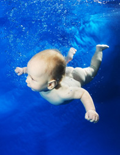

Genetic Engineering
- Genetics Introduction
- Genetic Basics
- Engineering Methods
- Human Cloning
- Eugenics
- Designer Babies
- Mapping The Genome
- Genetics and Religion
- Disease Elimination
- Longevity
- Capacity
- Adaptability
- Fashion
- Physical Attraction
- Stem Cells Revealed
- Stem Cells Controversy
- Human Rights
- The Genetic Brain
- Human Speciation
Genetic Engineering
Adaptability
At the moment adaptation of the human form is purely speculative and all a bit Sci-Fi. Which is great because it means that our imaginations can run wild. All those things we wished we could do but our bodies don't let us become possible. What if we could develop wings? survive underwater? Or completely adapt for survival in currently hostile environments; places of extreme temperature, where gravitational pull is higher or lower, the air unbreathable - i.e. other planets. Maybe we would want to adapt ourselves to have very long limbs or to be very short because it suited our chosen profession. Or what about getting the eyes of a hawk or the skin of a rhino, all of these adaptations have their potential uses.
THE SCIENCE
Of course, at present we do
not have the technology or the knowledge to
make these kinds of radical changes to ourselves,
but it could happen with genetic engineering,
gene and stem cell therapy.
We could pre-create the desired human using
genetically engineered cells to produce the
necessary tissue or organs.
DNA could be cloned and the genes manipulated
and used to create the future human.
Stem cells manipulated and implanted, possibly
with the help of some nanorobots and a little
AI thrown into the mix.
What about trait genes, tissue or organs from
animals, developed for human use.
We could grow new, different organs altered
to suit a particular purpose.
All of these theories are speculative with very
little research or experimentation to back up
any of these ideas.
But they are far from new ideas. In 1957 James
Blish wrote a collection of science fiction
stories that were published in 'Seedling Stars'.
These stories introduced a new word 'Pantropy',
meaning 'to change all', which encompassed the
idea of changing the human form to survive on
other planet.
Of course at the time little was know about
just how extreme the environments could be!
A FEW EXAMPLE SCENARIOS:
Fertility on demand
With an ever growing population more control over our reproductive process may well be desirable. At present women have a regular fertile period each month for a set period of years. But what if we could find a way to turn on and turn off that fertile period. We could alter ourselves to basically not have a fertile period until we wanted. Firstly we would alter the reproductive system to not work until we were ready and willing. Then we put in place the on/off switches using some AI and nanorobots. There ya go, a fertility system completely under our control, no need for artificial birth control.
Pantropy.
Underwater humans
There are quite a few problems
to solve before humans can become pseudo fish.
First and foremost how will we breath? Even
fish need oxygen, they use gills instead of
lungs to extract the oxygen from the water.
Maybe we would want to be able to exist both
in and out of water. We could perhaps learn
something from the various animals that have
the ability to use both a gill and a lung system
that means they can breath both air borne and
water borne oxygen - bimodal breathing.
Secondly, how do we deal with the pressure imbalance
that causes
the
bends.
Thirdly, what about our skin? We all know the
consequences of staying in the water too long,
our skin has only a
limited
tolerance to saturation.
Fourthly, a few minor things like flipper feet
and hands, eye protection and visual capacity,
communication, temperature tolerance to name
but a few.
Basically a large proportion of the human machine
would need to be redesigned.
Here are a few suggestions for some of the necessary
alterations.
We know that we can't breath underwater, our
lungs do not have the capacity to
extract
enough oxygen from water but we can breath
whilst submerged in other liquids such as
perfluorocarbon
(PFC) which are denser and more oxygen rich
than water.
What this means is that the lungs can contain
fluid and remain functioning. Using PFC or another
similar fluid might mean we can dive deeper
for longer, but it will require additional equipment.
So it's not really an answer to the creation
of the human pseudo fish.

Babies seem to have a natural affinity with water; they love to swim, even as early as 3 months old they are extremely comfortable in and under water. Contrary to popular belief we do not breath liquid whilst we're in the womb. During gestation the foetus survives in fluid, but it's not using its lungs at this point, the oxygen/carbon dioxide exchange system is supplied by the mother via the umbilical cord. Once the foetus exits a remarkable process takes place that changes the circulatory system and activates the lungs. So, back to the swimming babies, how does a baby know not to try breath underwater? It uses an instinct known as the mammalian dive reflex, which closes off the epiglottis thus preventing water from entering the lungs, similar to the process that stops us from breathing in our coffee, but one that we learn to override after a year or so in favour of holding our breath.
So what has this got to do with the adaptation of the human for life underwater? Well perhaps the basic functions for underwater breathing are already there. We could stop the change, at birth, from external oxygen access to lung functioning. We replace our present breathing system with a system that uses an external lung to extract the oxygen from the water. The system is housed inside a protective layer of toughened skin with a tubing system to draw in new water, extract the oxygen and then expel the used water; basically we genetically engineer an aqualung and live continuously underwater. Alternatively let's leave the system as is but add on an extra external system as above for use underwater and we have a system for bimodal breathing. Another system for continuous underwater life might be to genetically change the lungs so that they have a bigger surface area enabling us to extract enough oxygen from water, and then adjust the lining of the lung to use water borne oxygen.
Whichever system we choose to develop we need to create a system to protect us from the pressures of the deep. Perhaps that could be in the form of a strengthened skin, that also addresses the problem of skin wrinkling, instead of sebum making our skin waterproof we would have a more efficiently waterproofed skin. After these major issues have been solved the minor stuff like changing the foot and hand structure should be easy. We simply need to target the relevant limb genes and engineer them to be more duck like. And we could create an extra layer for the eyes to protect them; or re-engineer them to function more usefully underwater.
The same process would apply to adaptation to whatever new environment we found ourselves in; identify the changes needed, sort out which genes to change and engineer the changes.
But what if we started out on our long space journey, uncertain of the conditions at our final destination? How would we survive the possibly centuries long journey?
SCENARIO:
Space travel
We set out on our journey in
search of a new home planet; we're not entirely
sure what the environment will be like once
we get there, but we have some ideas about what
we're looking for, we'd like it to be as close
as possible to earths atmosphere.
Our volunteer crew choose their role:
•
To be initial crew members those that start
the journey, running the ship for the first
200 years. We have of course perfected longevity
by this time. These crew have specialist
skills and have been genetically modified for
those task.
•
To be placed in a state of
suspended
animation awaiting the time when they will
be needed as replacement crew.
•
As above but available for genetic modification
once the new planet has been found and the modification
needs identified.
•A
bank of frozen embryos will be waiting for the
time when the planet has been found. They will
be appropriately modified to meet the needs
of the new planet.
•Additionally
some will be modified for rapid development
from child to adult.
All very easy really, when's the next ship out?
^ Top ^